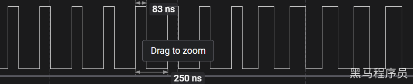
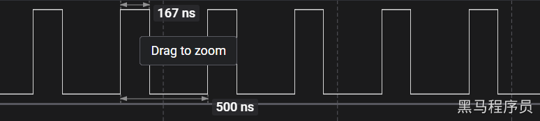
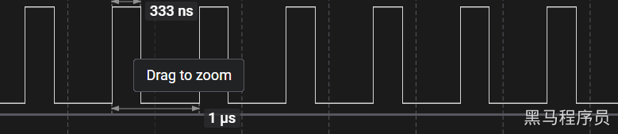

<!DOCTYPE lake>
<h2 data-lake-id="ndQ5x" id="ndQ5x"><span data-lake-id="ufc46672d" id="ufc46672d">学习目标</span></h2><ol list="u369812eb"><li data-lake-id="u1fd51f92" fid="uafbec790" id="u1fd51f92"><span data-lake-id="u7f633689" id="u7f633689">了解系统时钟概念</span></li><li data-lake-id="ue2095cc0" fid="uafbec790" id="ue2095cc0"><span data-lake-id="u71dd9a87" id="u71dd9a87">了解时钟周期概念</span></li><li data-lake-id="u55d9ddad" fid="uafbec790" id="u55d9ddad"><span data-lake-id="u590b4166" id="u590b4166">了解指令周期（机器周期）概念</span></li></ol><h2 data-lake-id="auXyO" id="auXyO"><span data-lake-id="u7b565697" id="u7b565697">学习内容</span></h2><h3 data-lake-id="A2DXy" id="A2DXy"><span data-lake-id="u5a718ebb" id="u5a718ebb">时钟与周期</span></h3><h4 data-lake-id="ZEv00" id="ZEv00"><span data-lake-id="u5477c244" id="u5477c244">系统时钟</span></h4><p data-lake-id="uf6f81849" id="uf6f81849"><span data-lake-id="u1662693b" id="u1662693b">系统时钟是指计算机中用于控制各个设备协调工作的定时器。它是计算机的主频，是CPU和外设工作的基础，通常表示为以赫兹为单位的频率，如1MHz，10MHz等等。</span></p><p data-lake-id="u4f1308a3" id="u4f1308a3"><span data-lake-id="ue0238212" id="ue0238212">系统时钟的时钟信号，通常以晶振的形式提供。STC8H单片机支持外部晶振和内部晶振两种时钟源，可以通过相应的配置来选择使用哪种时钟源。</span></p><h4 data-lake-id="sPdWq" id="sPdWq"><span data-lake-id="u16e62480" id="u16e62480">时钟周期</span></h4><p data-lake-id="uf23022ac" id="uf23022ac"><span data-lake-id="u5717c16b" id="u5717c16b">时钟周期是系统时钟一个完整的周期所需的时间。它的倒数就是时钟频率，即每秒钟发生的时钟周期数。例如，STC8H的时钟频率为</span><code data-lake-id="uc5d2e813" id="uc5d2e813"><span data-lake-id="u2b0ace56" id="u2b0ace56">24MHz</span></code><span data-lake-id="u2a88ec57" id="u2a88ec57">，那么每个时钟周期的时间就是</span><code data-lake-id="u91d6b51f" id="u91d6b51f"><span data-lake-id="u61335e10" id="u61335e10">1/24MHz=41.67ns</span></code><span data-lake-id="ucb656e49" id="ucb656e49">。</span></p><h4 data-lake-id="sSgJ6" id="sSgJ6"><span data-lake-id="u2e49fe93" id="u2e49fe93">机器周期</span></h4><p data-lake-id="u238b0be6" id="u238b0be6"><span data-lake-id="ud2c81bf8" id="ud2c81bf8">也叫做指令周期。指令周期是一条指令的执行时间。</span></p><p data-lake-id="u840da16c" id="u840da16c"><span data-lake-id="u3f0cd56b" id="u3f0cd56b">早期的STC8H单片机的机器周期为12个时钟周期。现在的STC8H可以有两种配置，一个是1T，一个是12T。</span></p><ul list="u6578fc49"><li data-lake-id="u4ae67957" fid="ud19f7969" id="u4ae67957"><span data-lake-id="u536712e0" id="u536712e0">12T也就是早期的配置，假设当系统时钟为24MHz时，每个机器周期的时间就是</span><code data-lake-id="u7badc6ec" id="u7badc6ec"><span data-lake-id="uf6aeb707" id="uf6aeb707">12 * 41.67ns = 500ns</span></code><span data-lake-id="ua59edc88" id="ua59edc88">。</span></li><li data-lake-id="uf0d22aee" fid="ud19f7969" id="uf0d22aee"><span data-lake-id="uf956109d" id="uf956109d">1T是芯片架构升级后的，每个机器周期的时间为 </span><code data-lake-id="u5b6cbcc5" id="u5b6cbcc5"><span data-lake-id="ud66107b7" id="ud66107b7">1 * 41.67ns = 41.67ns.</span></code><span data-lake-id="ufde72a55" id="ufde72a55">。</span></li></ul><p data-lake-id="u9ed95514" id="u9ed95514"><span data-lake-id="uc7ae4596" id="uc7ae4596">​</span><br/></p><h3 data-lake-id="zZRTR" id="zZRTR"><span data-lake-id="u2472e0f9" id="u2472e0f9">NOP指令</span></h3><p data-lake-id="u3b6a4e1a" id="u3b6a4e1a"><span data-lake-id="uc0c0f14e" id="uc0c0f14e">NOP指令是一种汇编指令，表示“no operation”（不执行任何操作）。它不会改变寄存器的值，也不会修改存储器中的数据。在程序中插入NOP指令可以用于延时或调整代码的执行顺序。</span></p><p data-lake-id="u90e8348e" id="u90e8348e"><span data-lake-id="u6fa1d53d" id="u6fa1d53d">在大多数处理器中，NOP指令会被翻译成一个或多个机器指令来实现其“不执行任何操作”的效果。在STC8H单片机中，NOP指令被翻译成一条长度为1个字节的指令，不做任何操作。</span></p><p data-lake-id="ub37f0eb5" id="ub37f0eb5"><span data-lake-id="uc4eab65d" id="uc4eab65d">NOP指令在某些情况下也被用于填充一些未使用的空间，使程序的大小达到特定的大小或对齐要求。在编写汇编代码时，程序员可以在代码中插入NOP指令来占用空间，使得代码和数据能够对齐在内存中的特定地址上，以提高程序的执行效率。</span></p><p data-lake-id="u701d2cd0" id="u701d2cd0"><span data-lake-id="u09069827" id="u09069827">我们可以理解为让程序执行时，睡1个NOP指令周期的时长。</span></p><h3 data-lake-id="n0EmD" id="n0EmD"><span data-lake-id="u0dd5e03a" id="u0dd5e03a">库函数系统时钟配置</span></h3><p data-lake-id="ua058be4b" id="ua058be4b"><span data-lake-id="u527edd0b" id="u527edd0b">在</span><code data-lake-id="u62f9f9d2" id="u62f9f9d2"><span data-lake-id="u53cfea1d" id="u53cfea1d">config.h</span></code><span data-lake-id="ua3bb61db" id="ua3bb61db">中，配置系统时钟频率。</span></p><span class="yuque-card-unsupported">[codeblock]</span><p data-lake-id="uf89dc3dd" id="uf89dc3dd"><span data-lake-id="u44288a60" id="u44288a60">根据实际情况配置系统时钟。</span></p><p data-lake-id="u47fc9df3" id="u47fc9df3"><span data-lake-id="u67df8036" id="u67df8036">值得注意的是，在系统时钟配置确定后，烧录时的时钟频率和此处配置的频率应该保持一致，否则会出现一些奇奇怪怪的错误。</span></p><h3 data-lake-id="HgYYi" id="HgYYi"><span data-lake-id="u3511c975" id="u3511c975">测试不同时钟的执行周期</span></h3><p data-lake-id="u4a0a625b" id="u4a0a625b"><span data-lake-id="u50c916d9" id="u50c916d9">睡眠一个指令周期，观测高低电平变化时长。切换不同主频，体会主频不同带来了什么变化？</span></p><span class="yuque-card-unsupported">[codeblock]</span><p data-lake-id="ucd673224" id="ucd673224"><span data-lake-id="u9c9f59c5" id="u9c9f59c5">以下为几种主频下的高低变化情况</span></p><p data-lake-id="u98fb9952" id="u98fb9952"></p><p data-lake-id="u2e8db6ee" id="u2e8db6ee"><span data-lake-id="u151866c2" id="u151866c2">​</span><br/></p><p data-lake-id="u10cf8b9a" id="u10cf8b9a"></p><p data-lake-id="u8b32d1a5" id="u8b32d1a5"><span data-lake-id="u5e44d409" id="u5e44d409">​</span><br/></p><p data-lake-id="u3cadcd2e" id="u3cadcd2e"></p><p data-lake-id="ud583d0e8" id="ud583d0e8"><span data-lake-id="u5085ef78" id="u5085ef78">​</span><br/></p><h4 data-lake-id="JS04t" id="JS04t"><span data-lake-id="uaf11a96f" id="uaf11a96f">小结：</span></h4><ul list="udcbb6837"><li data-lake-id="u52cd74b8" fid="u606524e9" id="u52cd74b8"><span data-lake-id="ue5c3b836" id="ue5c3b836">主频越高，执行速度越快。</span></li><li data-lake-id="u38019ea9" fid="u606524e9" id="u38019ea9"><span data-lake-id="ub9585962" id="ub9585962">主频越高，干扰越强，越容易出现问题。</span></li></ul><p data-lake-id="u2b35d156" id="u2b35d156"><span data-lake-id="u23a70d5e" id="u23a70d5e">​</span><br/></p><h2 data-lake-id="bXh1l" id="bXh1l"><span data-lake-id="u84705715" id="u84705715">练习题</span></h2><ol list="u283cebf7"><li data-lake-id="u11ed276a" fid="u8629ec00" id="u11ed276a"><span data-lake-id="ub257a7f7" id="ub257a7f7">配置系统时钟主频</span></li><li data-lake-id="u1b263d52" fid="u8629ec00" id="u1b263d52"><span data-lake-id="uf69013ea" id="uf69013ea">调试不同主频下，执行周期</span></li></ol>